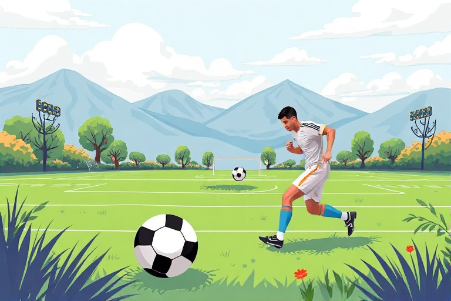

A Beginner's Guide to Understanding and Playing Football

Category: football | Language: enFootball, often called soccer in some parts of the world, is the most popular sport on the planet. It is played between two teams of eleven players each on a rectangular grass field with a goal at each end. The main objective is simple: move the ball down the field using only your feet or body and kick it into the opponent's goal. The team that scores the most goals by the end of the match is declared the winner.
To start playing, you must understand the basic rules that keep the game fair. The most important rule is that players cannot touch the ball with their hands or arms, except for the goalkeeper within their designated penalty area. A standard professional match lasts for 90 minutes, divided into two 45-minute halves. If the ball goes out of bounds on the sides, it is thrown back in by hand, and if it goes past the goal line, a corner kick or goal kick is awarded depending on who touched it last.
Every player on the team has a specific role to help win the game. Goalkeepers are the last line of defense and protect the goal, while defenders stay back to stop the other team from scoring. Midfielders are the engines of the team, playing in the center of the pitch to connect the defense and the attack. Finally, forwards or strikers focus on moving into the opponent's territory to take shots and score goals. Learning which position suits your physical strengths is a great way to start your football journey.
Developing basic skills is essential for any beginner who wants to enjoy the game. Dribbling is the art of keeping the ball close to your feet while moving across the pitch. You should practice using different parts of your foot to maintain control and change directions quickly. Passing is equally important, as it allows you to move the ball efficiently to your teammates. A good pass is usually made with the inside of the foot for better accuracy, ensuring the ball reaches its target smoothly.
Scoring a goal is the most exciting part of football and requires practice. To shoot effectively, you should keep your eyes on the ball and aim for the corners of the goal where the goalkeeper is less likely to reach. Practice your power and accuracy by kicking the ball against a wall or into an empty net. Remember that teamwork is vital; sometimes passing to a teammate in a better position is more effective than taking a difficult shot yourself.
Before you hit the field, make sure you have the right gear to stay safe and perform well. A pair of football boots with studs provides the necessary grip on the grass, while shin guards are essential to protect your legs from accidental kicks. Wearing comfortable, breathable clothing will help you move freely during the match. Most importantly, always warm up before playing to prevent muscle injuries and stay hydrated throughout the game to keep your energy levels high.